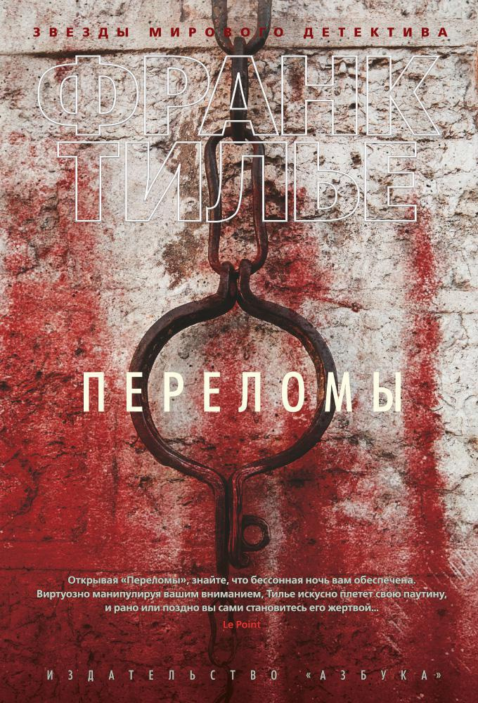
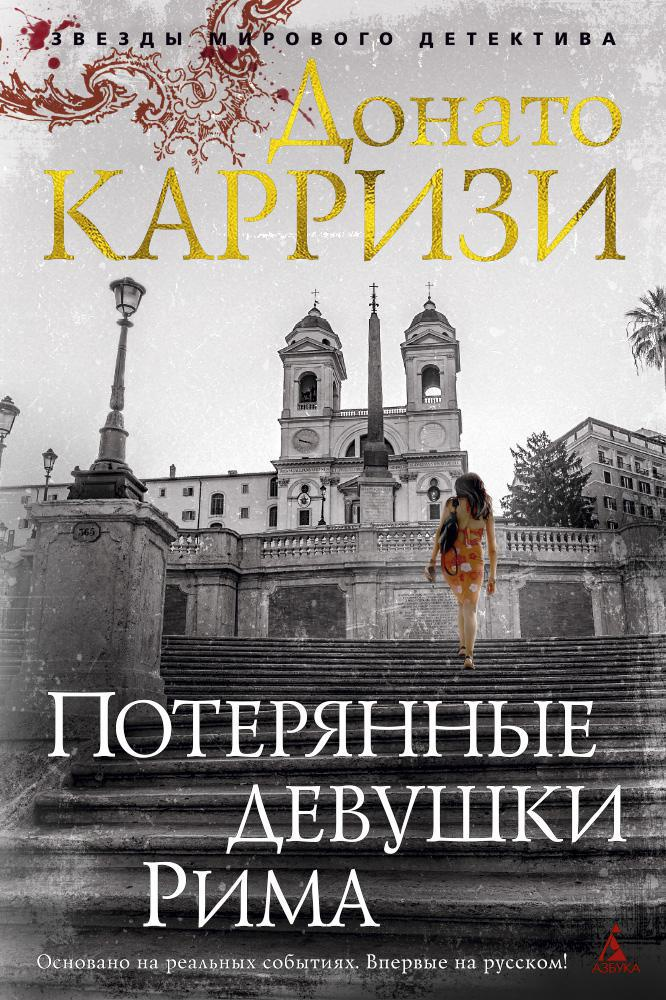
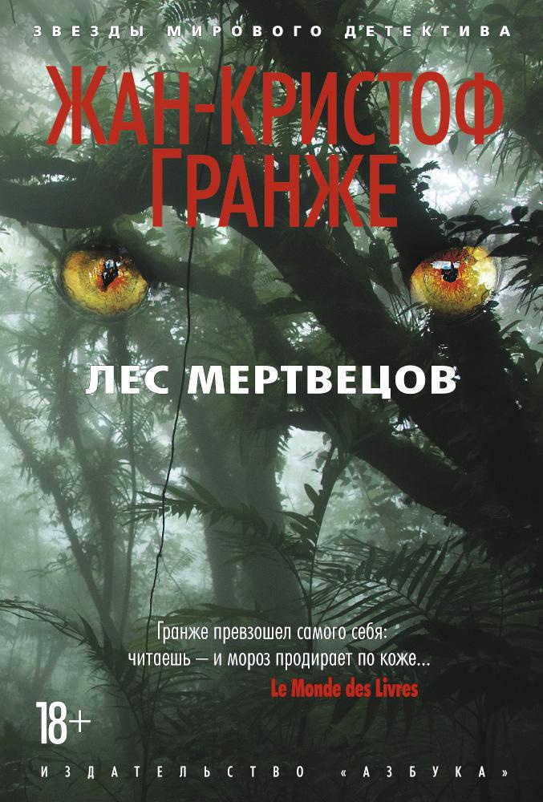
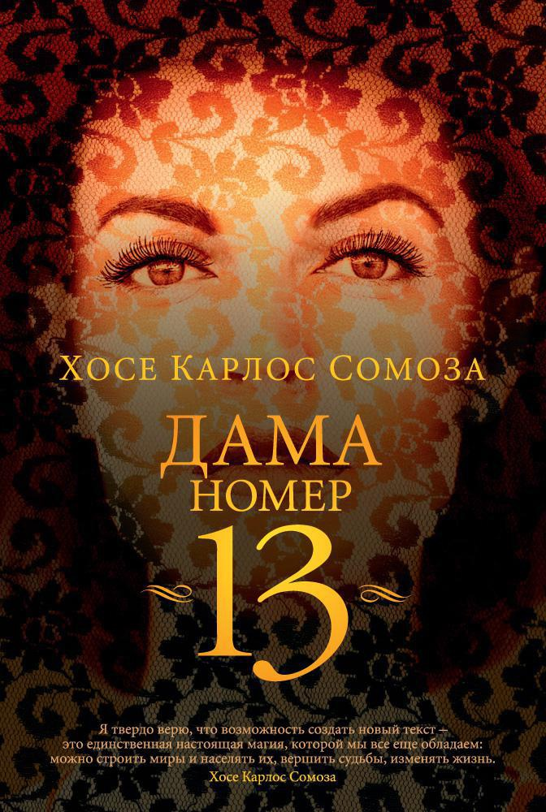
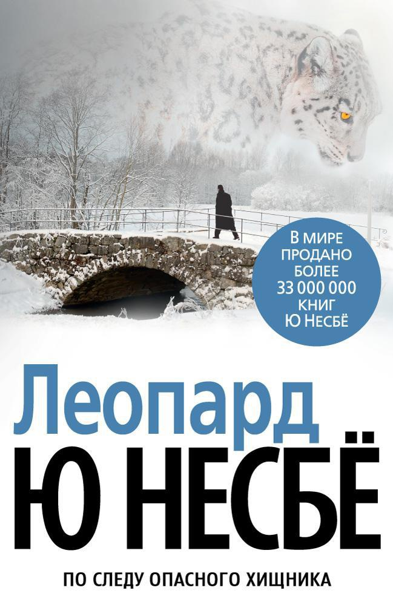
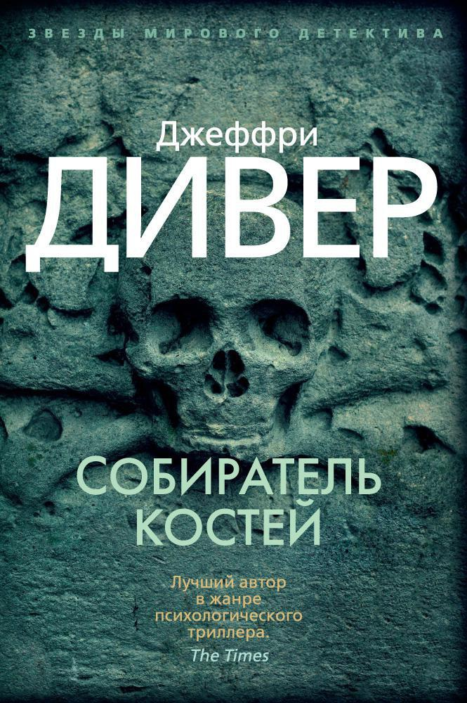
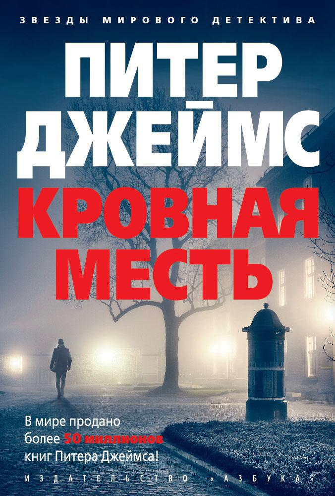
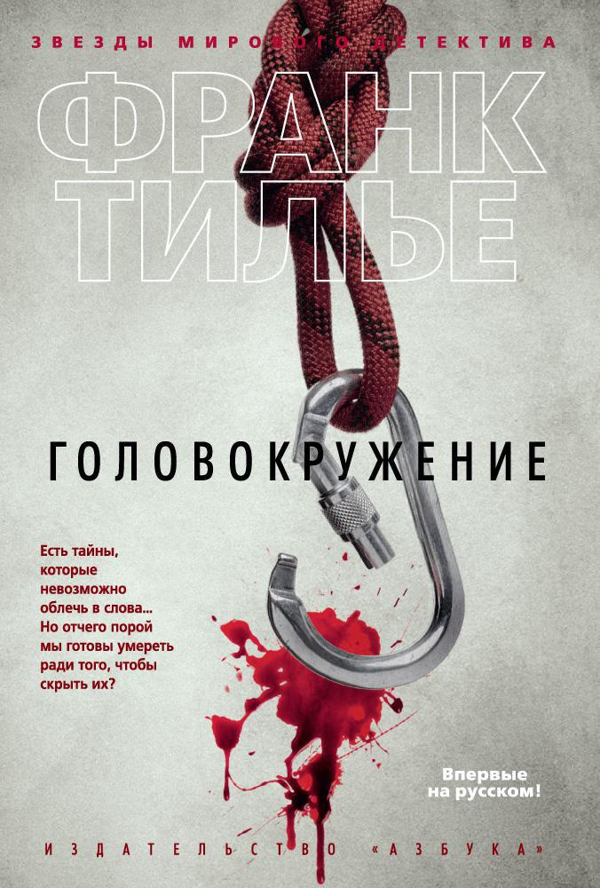
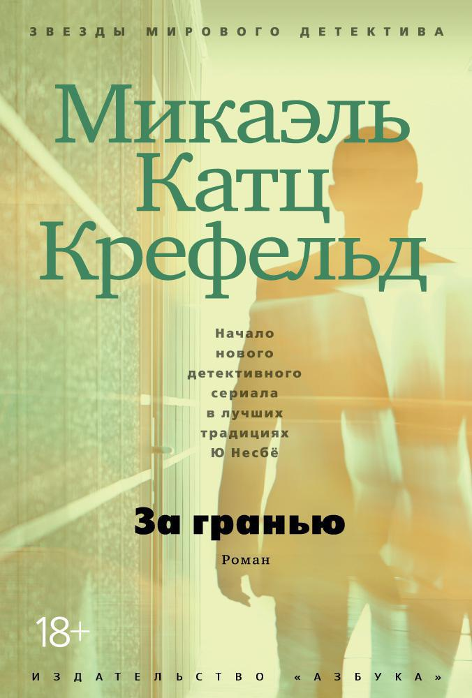
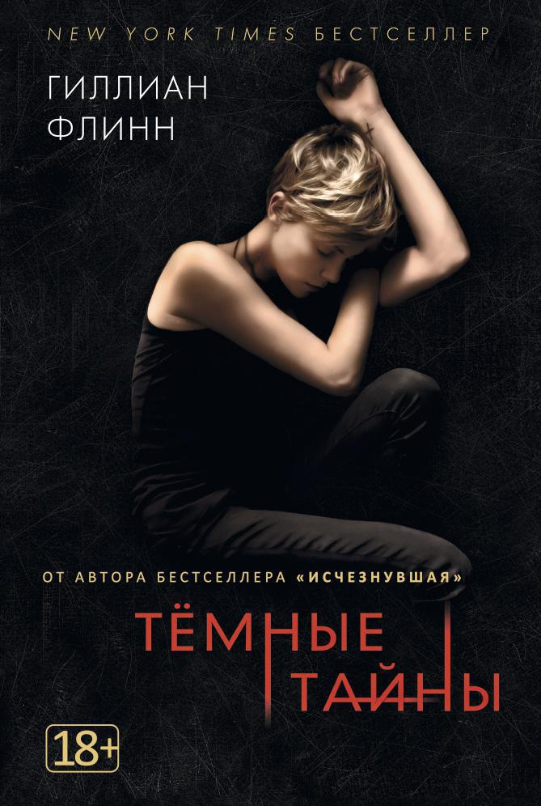

Страх, да и только: 10 лучших ужасов и триллеров
Щекотать нервы приятнее всего в тепле и уюте — за книжкой. Перед вами десять захватывающих сюжетов, лучших книг самого мрачного жанра. Впечатлительным лучше не читать перед сном.
-
Переломы
Прежде чем приступить к роману «Переломы», французский писатель Франк Тильепровел не один час, консультируясь со специалистами по судебной психиатрии. Бывший инженер-информатик к делу подошел системно и основательно — книга начинена героями с полным букетом психических расстройств.В начале сюжет представляет собой эклектичную мозаику разных историй. Тут и журналист, травмированный опытом войны в Ливане, и девушка с провалами памяти — «черными дырами», как она это называет. И социальный работник, обнаружившая на автобусной остановке абсолютно неподвижного голого мужчину, и психиатр, и похищенный человек, очнувшийся в клетке. Есть еще масса других персонажей, до поры непонятно как между собой связанных.Тилье удается мастерски переплести их всех в единый орнамент сюжета, раскрывающий мрачные бездны больного рассудка, способного на страшные, кровавые преступления.
 -
Потерянные девушки Рима
В романе итальянского писателя и сценариста Донато Карризи все оказывается не тем, чем кажется. Тайна исповеди — источником информации, храм божий — местом, где могут убить, сыщик — священником, священник — экстрасенсом, бессмертная душа — хранилищем грязных тайн, а злые поступки — добрыми. Именно в неоднозначности противостояния добра и зла заключена сверхидея романа.В книге переплетаются несколько сюжетных линий, но в центре событий лежит расследование похищения и убийства нескольких девушек. Его ведет Маркус, священник, не помнящий своего прошлого, но способный видеть то, что от других ускользает, и таким образом предсказывать будущее.Его путь пересекается с Сандрой, фотографом-криминалистом, недавно при загадочных обстоятельствах потерявшей мужа. Вместе они проходят череду чудовищных испытаний и открытий, чтобы в непредсказуемом финале осознать главное: безопасность даже за каменной стеной — лишь иллюзия, а самая жуткая черта внутри каждого человека — обыденность.
 -
Лес мертвецов
Книга французского мэтра остросюжетных детективов написана на стыке сразу трех жанров: женский роман, путеводитель и собственно детектив.Главная героиня «Леса мертвецов» судья Жанна Крулевская мается от отсутствия личной жизни, но все ее женские метания меркнут, когда она сталкивается с рядом ритуальных убийств, совершенных с особой жестокостью. Расследование, которое по некоторым причинам она ведет неофициально, приводит ее в Южную Америку, где кроме погони за загадочным маньяком-каннибалом, коррективы вносит еще и неспокойная политическая обстановка. Гранже обожает ужасающие анатомические детали, а непредсказуемая развязка заставляет присвистнуть даже скептически настроенного читателя.
 -
Дама номер 13
Могут ли стихи убивать? Не метафорически, а на самом деле: с вытягиванием жил, разорванными телами и лопнувшими черепами... Испанский писатель Хосе Карлос Сомоза, психиатр по образованию, считает, что вполне.В своих книгах он имеет обыкновение скрещивать искусство с криминалом и мистикой. На этот раз он выбрал поэзию — сферу, максимально далекую от детективного жанра.Для воплощения идеи автор придумал неких сущностей — дам. То ли муз, то ли валькирий, то ли ведьм. Дамы вдохновляют великих поэтов и попутно выясняют отношения между собой. Побочным эффектом становятся отнятые человеческие жизни, а точнее — кровавые преступления, на которые злодейки толкают людей через стихи, прочитанные определенным образом.Преподавателю литературы Саломону Рульфо постоянно снится кровавый кошмар. Сон становится реальностью, когда Рульфо видит о нем новостной репортаж. Идя по следу своего наваждения, герой знакомится с привлекательной проституткой Ракель, у которой оказываются те же проблемы. Чтобы разгадать секрет всего происходящего и помимо этого пережить личные потери, герои объединяют усилия. Но неожиданно из личного ада попадают в мистический мир, управляемый таинственными, кровожадными дамами.Такой богатый сюжет не мог избежать экранизации. Снятый по книге фильм получил название «Муза смерти» и вышел в российский прокат в мае 2018 года.
 -
Леопард
Норвежский мастер хоррор-детективов Ю Несбё российскому читателю хорошо известен, как и его любимый персонаж сыщик Харри Холе, блестяще сыгранный Майклом Фассбендером в экранизации бестселлера «Снеговик».«Леопард» — восьмая книга в серии приключений мрачного детектива-алкоголика и, по мнению читателей, — самая жестокая. Начинается она с поисков… самого Харри Холе, отправившегося залечивать душевные раны после дела злополучного Снеговика в Гонконг.В Норвегии снова появился маньяк, убивающий кошмарным экзотическим приспособлением. Полиция не справляется, и Харри просят вернуться, чтобы остановить череду убийств.Магия писательского мастерства Несбё проявляется не в подробных, кровавых описаниях нечеловеческой жестокости убийцы, а в логическом объяснении безумия.
 -
Собиратель костей
Иногда, чтобы поймать маньяка, нужен другой маньяк. Например, одержимый стремлением подчинять всё и всех интересам расследования.Линкольн Райм, эрудит и гордость нью-йоркской полиции, почти полностью парализован, поэтому идти по следу кровавого садиста ему позволяет лишь сила разума и очаровательная помощница Амелия Сакс. Райм умеет разгадать по изощренным подсказкам преступника, где и как он намеревается совершить следующее убийство.Роман был экранизирован в 1999 году под названием «Власть страха». В главных ролях снялись Дензел Вашингтон и Анджелина Джоли, и все же знакомиться с произведением лучше по книге.
 -
Кровная месть
Когда две актрисы одна за другой покончили жизнь самоубийством, коронеры усмотрели в этом не более чем несчастное совпадение. Но детектив-констебль Гленн Брэнсон уверен, что дело сложнее, чем кажется.Пересказывать этот захватывающий сюжет дальше и бесполезно, и рискованно — автор по капле добавляет детали в портрет преступника, чтобы в конце продемонстрировать невероятные кульбиты, которые способна выделывать человеческая психика. Питер Джеймс хорошо знает, о чем пишет, он давно и плотно сотрудничает с британской полицией, профессионально разбирается в судебной медицине и криминалистике и, по собственному признанию, «видит маньяков и убийц чаще, чем честных граждан»
 -
Головокружение
Жертвы преступлений редко имеют собственный голос. Даже искушенные в кровавых деталях авторы ужасов чаще всего выбирают спасительное третье лицо единственного числа для описания страданий людей, подвергшихся насилию. Не таков Франк Тилье. В романе «Головокружение» он бесстрашно пускается в повествование от первого лица, причем именно от лица жертвы. Герой романа, альпинист Жонатан Тувье внезапно обнаруживает себя прикованным к скале в какой-то пещере. Вместе с ним там оказывается его собака и два товарища по несчастью: один тоже на цепи, но более короткой, а второй – в железной маске, которая может взорваться, если ее носитель выйдет за разрешенные пределы. Все они оказались в пещере по воле некоего человека, играющего в одному ему понятную игру. В финале всем участникам обещана смерть.Тилье безжалостно препарирует человеческие ценности и задает острые, неуместные в обычной жизни вопросы: в какой момент люди перешагивают границу цивилизованности? Когда исчезают последние табу? Ответы на них мы узнаем через ощущения обреченного на смерть человека, что добавляет роману глубины, далеко не всегда присущей жанру триллера.
 -
За гранью
«За гранью» — психологический триллер, где есть коп в состоянии нервного срыва, маньяк-таксидермист и пропавшая проститутка, которую полицейский ищет, а маньяк убивает. Линии этих трех персонажей ведутся по отдельности. Сюжет выстраивается как бы с трех сторон, чтобы в финале переплестись в яркую, объемную и мрачную историю.Автор с самого начала не скрывает имя убийцы и его мотивы, нам известны и судьба жертвы, и трагические события из жизни сыщика. Интрига заключена не в том, чтобы узнать, что произошло, а в том, как разоблачить преступника. И здесь на первый план выходят тонкие психологические нюансы, за которыми предлагается следить внимательному читателю.«За гранью» — первый триллер Микаэля Катца Крефельда из цикла книг о Томасе Раунсхольте, частном детективе по прозвищу Ворон, вынужденном бороться не только с преступностью, но и с последствиями личной драмы.
 -
Темные тайны
Американка Гиллиан Флинн стабильно «стреляет в десятку». Все ее романы, а их на текущий момент три, стали бестселлерами и были экранизированы.«Темные тайны» — ее вторая работа. Книга получила премию «Черное перо», ежегодную награду за самый мрачный литературный хоррор.История «Темных тайн» рассказывается сразу в двух временных плоскостях: в настоящем и прошлом. Двадцать четыре года назад в собственном доме зверски убиты женщина и две ее дочери. Третьей дочке, Либби, удалось спастись. Убийцей оказался ее старший брат Бен. Он был подростком, во всем признался, да и Либби свидетельствовала против него, и теперь Бен пожизненно в тюрьме. Но спустя почти четверть века расследование возобновляется, ведь есть шанс, что юноша был не виноват...Для своего замысла Флинн выбрала сложное композиционное решение. Все события читатель видит глазами непосредственных участников, складывая адскую мозаику ошибок, совпадений и стечения обстоятельств, приведших к кровавой драме. Надо отдать должное мастерству писательницы, она подкидывает подсказки и намеки на протяжении всей книги, однако даже у очень въедливого читателя получится собрать из них общую картину лишь в самом конце.
